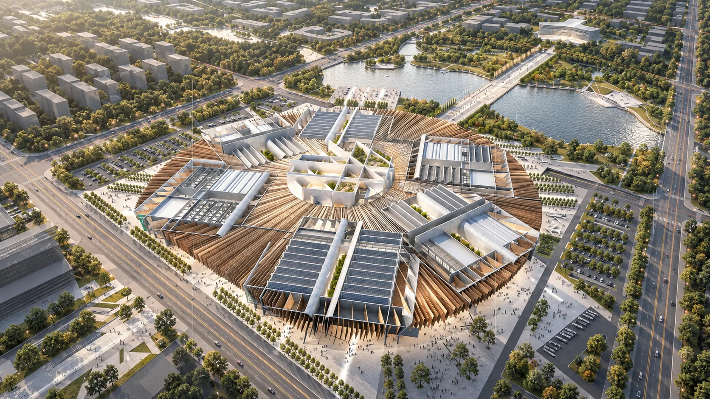
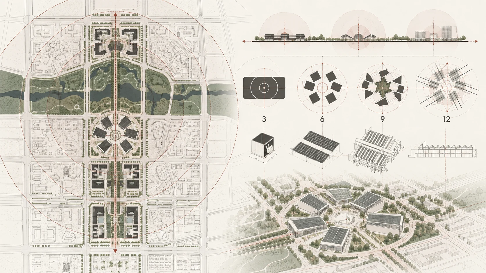

弓弼飞 / SELECTED WORK 2022—2026SPACE → SYSTEM → INTERFACE

查看建筑案例 ↗建筑空间 / 德州国际会展中心场地 · 组织 · 体验
跨尺度的设计与产品实践进入完整作品索引
Selected work
四个切面，
一条连续的路径。
从具体场景出发，进入设备、行为与界面。这里选取四件作品；完整索引收录九个案例。
SPACE / SYSTEM / INTERFACE
尺度改变，
问题逐渐清晰。
从建筑的空间关系，推进到设备连接，再落到可阅读的数据与界面。

空间关系 / 德州国际会展中心向下探索 ↓
Browse by field
选择一个领域，
继续深入。
工作方式
从问题到方案，
再回到使用。
理解场景、使用者与问题
转译需求、约束与方案
实现原型、协同与交付
验证测试、数据与复盘
继续交流
从一个具体问题，
开始下一次合作。
如果这些作品与你正在解决的问题有关，欢迎联系我交流。
联系我 ↗